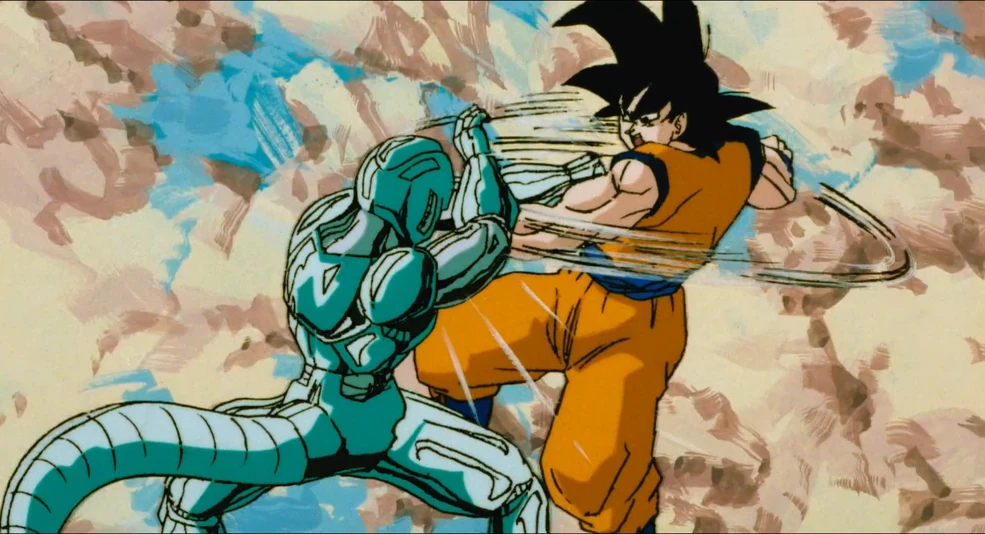

A energia das esferas corrompidas é um farol para Synestra, fortalecendo-a a cada segundo. Os heróis precisam encontrar as esferas amaldiçoadas antes que seu poder se torne absoluto. Mas como abordá-las?

Vocês viajaram pelo universo, enfrentando guardiões terríveis gerados pelas esferas amaldiçoadas — um golem de metal líquido em um planeta de sucata, uma ilusão de seus maiores medos, um clone sombrio de Gohan. A luta foi árdua e desgastante, mas vocês recuperaram todas as sete esferas corrompidas. Elas agora pulsam com poder sombrio em uma câmara de contenção na Corporação Cápsula. O que fazer agora?